原文连接:https://www.cnblogs.com/yichunguo/p/11930017.html
曾经有个女孩问我为什么要学Maven，我吧唧嘴就怼：Maven项目没有jar包它不香嘛，照样运行它不香嘛？如果让我一句话形容Maven，我会这样形容：“妈妈再也不用担心小明拿U盘去小红电脑里烤jar包了”，女孩听了瞬间泪崩了：”我其实也是一个中央仓库，以后缺jar包直接来找我，用不着小红”，我顿时有点受宠若惊~小鹿乱撞~。
进入正题，其实进行框架开发的时候难免会遇到一个叫Maven的鬼东西，重点强调一下这个读“ 妹文 ”，而不是什么“ 马文 ”或者什么“ 妈瘟”什么瘟的，读的跟闹瘟疫似的。我觉得会读了之后，你基本上就掌握了Maven一半了，不要觉得夸张，因为Maven真的很好学（会读掌握一半还是有点夸张），总得比一些学加用好几个月还天天读“ 妈瘟”的强多了。好了不扯犊子了，直接上干货！
什么是 Maven
一个老哥对 Maven 比较正式的定义是这么说的：Maven 是一个项目管理工具，它包含了一个项目对象模型，一组标准集合，一个项目生命周期，一个依赖管理系统，和用来运行定义在生命周期阶段中插件目标的逻辑。 我听了当时就笑了，maven不就一个管理jar包直接上坐标就能自动下载对应jar包的工具嘛，什么罗里吧嗦的定义嘛，装什么装（气势这一方面，我没服过谁），不过，这老哥总结的还真不错，立竿见影，文表齐全，真香！（秒怂~捂脸~）
Maven 能解决什么问题
这么说吧，我讲几个更通俗的方式来说明，哥几个感受一下：
项目开发不仅仅是写写代码而已，期间会伴随着各种必不可少的事情要做，这个时候，问题就来了
1、我们需要引用各种 jar 包，尤其是比较大的工程，引用的 jar 包往往有几十个乃至上百个， 每用到一种 jar 包，都需要手动引入工程目录，而且经常遇到各种让人抓狂的 jar 包冲突，版本冲突。
2、我们辛辛苦苦写好了 Java 文件，可是只懂 0 和 1 的白痴电脑却完全读不懂，需要将它编译成二进制字节码。好歹现在这项工作可以由各种集成开发工具帮我们完成，Eclipse、IDEA 等都可以将代码即时编译。当然，如果你嫌生命漫长，何不铺张，也可以用记事本来敲代码，然后用 javac 命令一个个地去编译，逗电脑玩。
3、世界上没有不存在 bug 的代码，计算机喜欢 bug 就和人们总是喜欢美女帅哥一样。为了追求美为了减少 bug，因此写完了代码，我们还要写一些单元测试，然后一个个的运行来检验代码质量。
4、再优雅的代码也是要出来卖的。我们后面还需要把代码与各种配置文件、资源整合到一起，定型打包，如果是 web 项目，还需要将之发布到服务器，供人蹂躏。试想，如果现在有一种工具，可以把你从上面的繁琐工作中解放出来，能帮你构建工程，管理 jar包，编译代码，还能帮你自动运行单元测试，打包，生成报表，甚至能帮你部署项目，生成 Web 站点，你会心动吗？
好了，说的不多，但实际上Maven 就可以解决上面所提到的这些问题。
Maven项目没有jar包它不香嘛，照样运行它不香嘛？
首先，我证明一下Maven项目中确实没有具体jar包
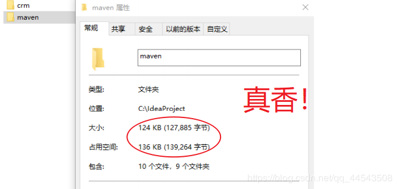
经过我严密整段并运用大量高数分析并花了半个小时，推断它里面一定没有 jar 包！不然它怎么可能这么小，才100来Kb，佩奇都能看出来~
学maven必须要知道的
Maven 的一个核心特性就是依赖管理，而依赖管理明了的说就是一个管理jar包的过程，既然maven项目不需要具体的jar包，那是怎么可以运行的呢？其实简单来说，一个Maven项目关于jar包主要看pom.xml 文件，然后通过坐标去仓库找到对应jar包,专业名词听着是不是很不得劲，哈哈
坐标 = 公司名/组织名 + 项目名 + 版本号 ，要找某个jar包必须确定坐标
仓库： 分为本地仓库和远程仓库\中央仓库
本地仓库：具体自己电脑下载jar包的地方
中央仓库：联网去网上找jar包的地方
私服： 公司自己的仓库（了解有这么个东西就行）
看图理解可能会更得劲
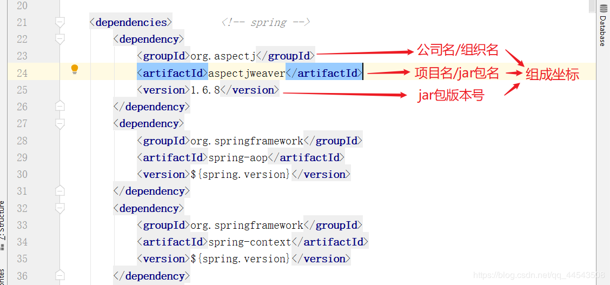
maven根据坐标具体找jar包的流程如下：
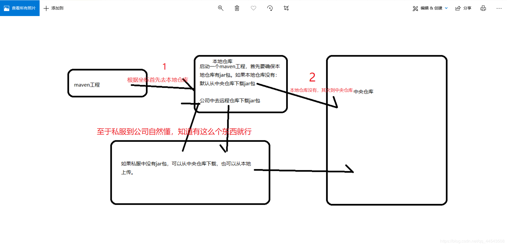
如何去中央仓库找jar包坐标并化为本地仓库jar包？
其实很简单，在中央仓库的字典里只要知道要找什么jar包，就能得到什么jar包，具体操作如下：
具体以找spring aop jar包为例子：
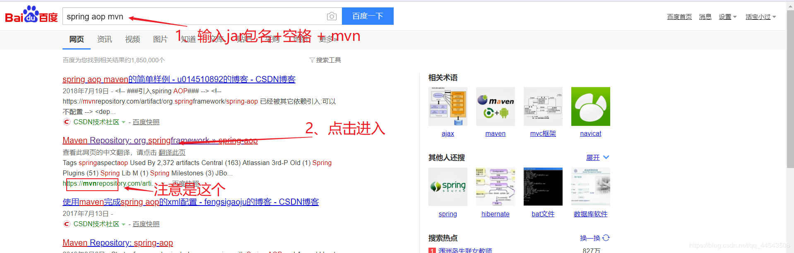
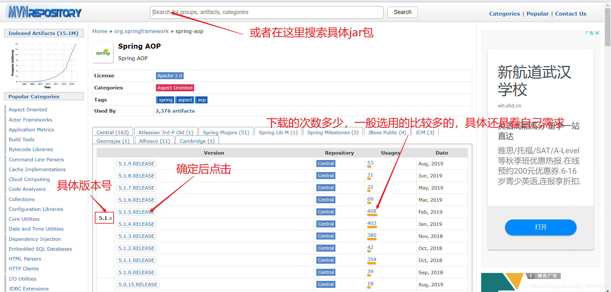
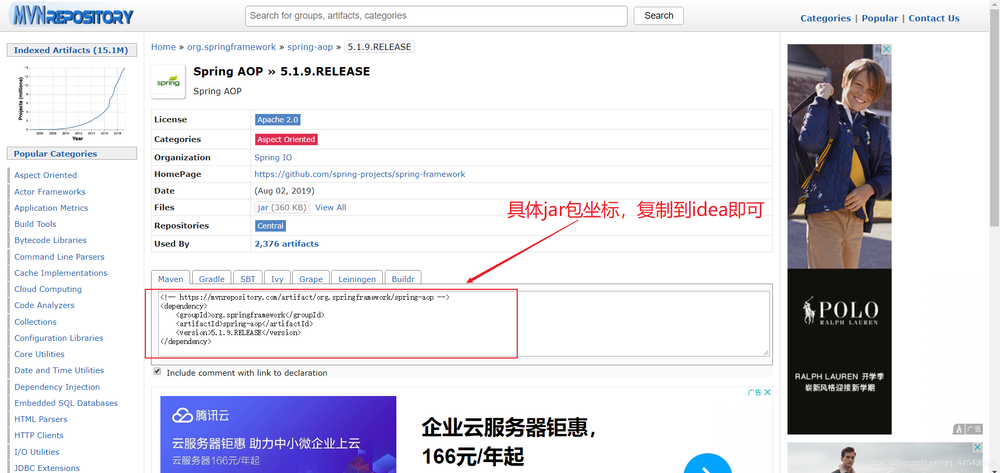
是不是也很简单？get到了嘛~
maven的生命周期和命令
我觉得，到现在我用了这么久maven都没怎么去使用它的生命周期，所以我觉得也没必要写长篇大论，了解即可（如果你想精通maven，如果你有这个时间和精力也可去找这方面资料深入）
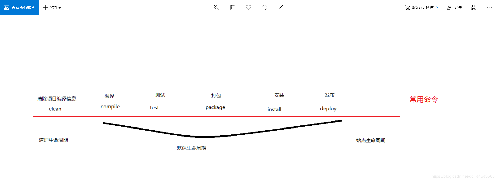
到这里，基本上常用的东西已经讲完了，而且我讲的都是重点，maven的重点很少，是不是很简单，当然我讲的也简单。学习其实就是一个化繁为简的过程！
maven的下载安装
下载：
方法一：maven官网：http://maven.apache.org/
方法二：直接百度maven （推荐！！！不要问我为什么，我就喜欢酱紫，简单粗暴，不搞那些花里胡哨的）
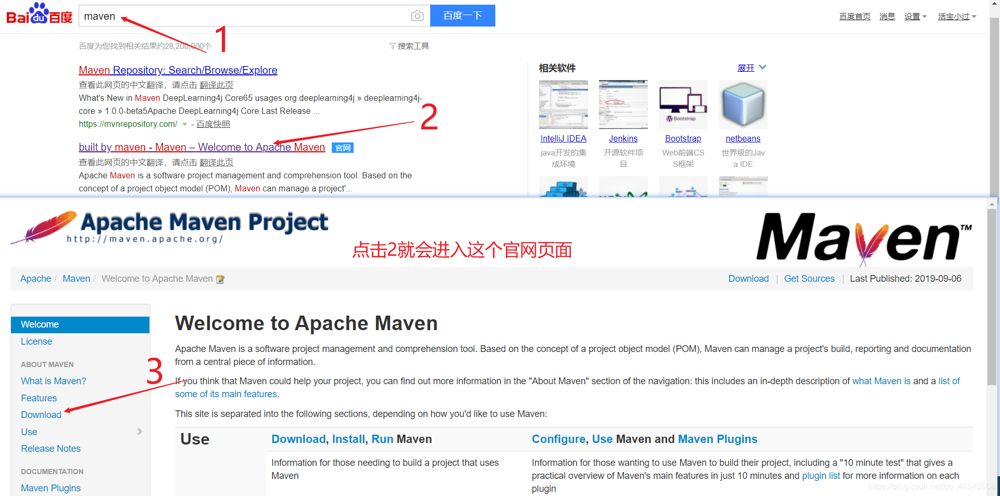
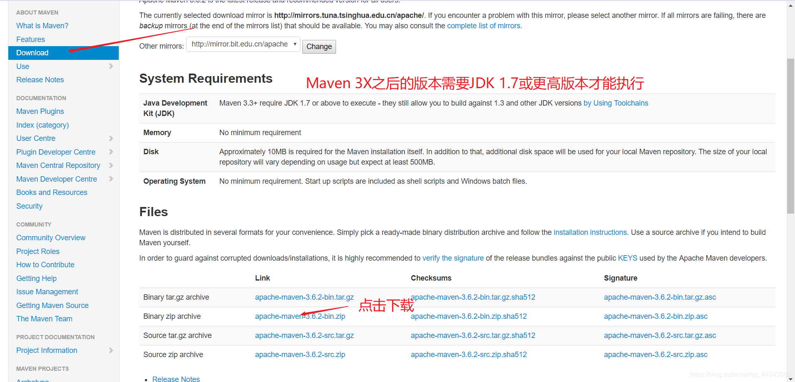
至于安装，解压就相当于安装了，一解压就完事了，我感觉maven开发者就是天才，就是像我这样的乡下人，喜欢简单粗暴，不搞那些花里胡哨的！
Maven 及 JDK 配置（了解）
至于我为啥写了解，是因为看到配置，是不是很烦？觉得烦的哥几个，咋们是亲兄弟啊，我还记得那天下午我特么配了一下午，才配好（而且我流程没问题，还冒出一个特别奇葩的问题，提起就伤心，不提了），后来发现配置好了到现在都没用上，没什么用。。。我建议如果只是单纯的做项目就不搞这花里胡哨的配置了，真的到现在我都没去用那个配置（主要完一些命令的），不配是可以的，只是一点要记住：JDK版本是1.7以上。如果你非执着要了解怎么配置，那我就告诉你，其实跟配java环境变量差不多，也是java_HOME类似操作（可以不配制，没毛病），当然你可以说我庸俗，但你绝对不知道“庸俗”也是俺们乡下人的勋章，啊，情怀懂不懂~
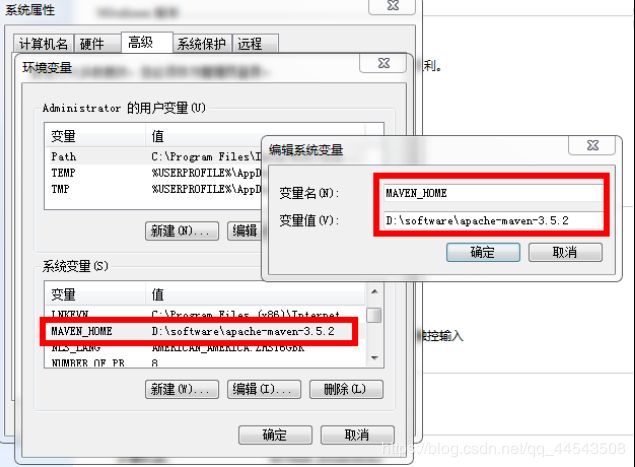
配置本地仓库位置
当然，这个其实也可以不配制，因为idea会默认给你放到C盘，但是像我这样优秀的人，~家贫，C盘空间小~肯定会去配置一下咯，把本地仓库放到D盘或者F盘（各位别任性，还是配置一下吧，万一你系统那一天炸了呐，jar包可就全没了鸭）~
配置流程：首先打开maven解压好的文件夹----conf----setting.xml打开加上需要配置位置如下：
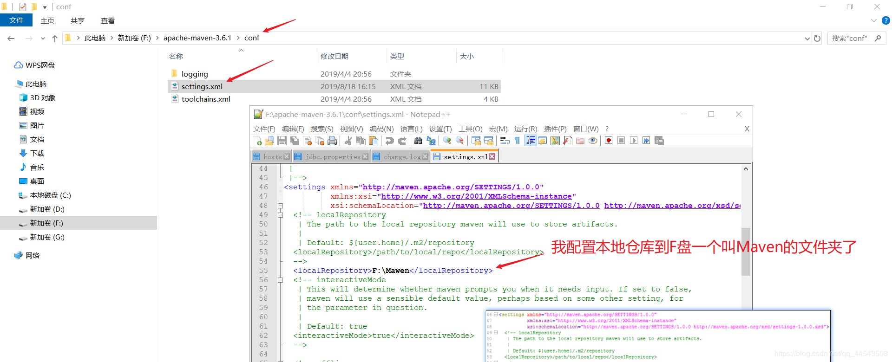
使用IntelliJ IDEA创建第一个Mawen项目
没使用IDEA搭建过的哥几个可以了解一下，我在这篇之前写的使用IntelliJ IDEA创建第一个Mawen项目
实战ssm搭建使用Maven
我在这篇文章中使用idea搭建过ssm框架基于mawen，具体的使用过maven，哥几个可以了解一下如何条理清晰思路使用IDEA整合ssm框架（详细思路+附带源码）
到这里，妈瘟的基本操作就呸呸呸，咳咳妹文的基本操作就OK了，maven基础就算是完美入门了，我讲的都是maven的核心常规操作只为让一些初学者快速入门，当然这还不够，因为还要学习maven的多模块开发，其实也很简单，今天就先到这里了，挥挥爪~
如果本文对你有一点点帮助，那么请点个赞呗，谢谢~
最后，若有不足或者不正之处，欢迎指正批评，感激不尽！如果有疑问欢迎留言，绝对第一时间回复！
欢迎各位关注我的公众号，一起探讨技术，向往技术，追求技术，说好了来了就是盆友喔...